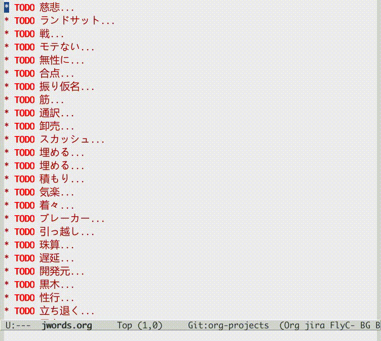

程序员学习日语经验分享
最近重新开始了学习日语，在此有点心得体会觉得很好玩，与大家分享一下。
1 日本名字由来
日本这个国家的名字很有意思，它是根据中国来的。虽然大家都知道，咱们的另一个邻居，韩国，有学者号称自己国家是宇宙的中心，但事实上，从名字上来说，天下的中心还得是咱们中国呀。
唐朝的时候，日本（当时还不叫日本）有遣唐使，见了皇帝皇帝就问他，“你们是从哪里来的？”，遣唐使们合计了一下，这得想一个气派一点的名字啊，就对皇帝说，“我们是从大唐的东边来，大唐的太阳升起的方向，日之本源，所以我们是从日本来的”。
更有意思的是，日本的英文名字 Japan、日语 Nippon/Nihon，跟中文里的日本，其实是同一个发音演变来的。就像英语名字 John，中文翻译成约翰；法语名字 Jean，中文翻译成“让”（这个杀手不太冷，让·雷诺），J 这个字母有时候发音接近于 Y 或 Sh。在马可波罗把 Japan 这个单词传向西方的时代，Japan 这个单词发音可能更接近于“亚本”或者“虾本”，就像山东话把“肉”(rou)念成“又”(you)，是类似的。
以上关于日本名字的说法来自于一本非常有意思的英语字典中 Japan 的单词解释： https://ahdictionary.com/word/search.html?q=Japan。
2 推荐一些日语字典工具
工欲善其事，必先利其器，跟大家分享一些日语学习的工具。首先是字典类工具。我使用的是 Linux 系统，日语字典工具还是比较多的，这里重点推荐一个叫“Gjiten”的，用起来感觉不错。看下面这张截图，注意它允许 4 种查询方式：完全匹配、匹配开头、匹配结尾和任意匹配——因此，这款字典软件特别适用于通过字根对比学习 N 个互相有关联的生词。
除了桌面版字典软件之外，也推荐一些 Web 日语字典工具，比如 http://jisho.org、 谷歌翻译 （https://translate.google.com）、 维基字典日文释义（https://en.wiktionary.org/wiki/%E8%9B%87%E5%8F%A3#Japanese）。 此外还有一个可以查日语发音重读音节的网页，东京大学的一个网站(http://www.gavo.t.u-tokyo.ac.jp/ojad/search/index)，大部分的日文字典都没有给出重读信息，除了这个网站。
此外，在使用 Gjiten 的过程中，发现它有很多词语类型、词性的缩写，比较常见的比如 n 代表名词 noun，v 代表动词 verb 等等都可以理解，但也有很多是不好理解的，于是上网搜了一下，发现日本人做事情真的是好严谨，有一个专门的网页解释这些缩写： 日文字典缩写代码 (http://www.edrdg.org/wiki/index.php/Dictionary_Codes)。
3 日语输入法
我在 Linux 底下，用的是一个叫 SKK 的日语输入法，最早是在 Emacs 编辑器下的，但后来也慢慢的被人移植到了 Linux 桌面系统的输入法框架里。
比较有意思的一点是，作为一个中国人，在学日语的初期阶段，我经常苦恼一个问题，就是我知道一个汉字，用简体是怎么写的，但对应的日本繁体字是怎么写的，怎么输入的，就不知道了。
中国以前也是使用繁体汉字的，后来进行了简化。日本的情况看上去更复杂一些，一方面它们也使用繁体字；另一方面它们有了一些自己的演化，或者可能保留了更古老的繁体写法；更要命的是，日本人也展开了对汉字的简化，并且有些简化方案是与中国简体字相同的，有些是不同的。
很多中文输入法其实是支持繁体输出的，但肯定不支持日语汉字的输出。比如，简体的“亚”字，如果是繁體的話，應該輸出成“亞”，但如果是日語的話，応該輸出成“亜”（注意上面这句话中的“应”字写法，简繁日也各不相同）。
後来我研究了一下微博上@byvoid 的 opencc 项目，并加了一些修改 ， 支持了简体汉字与日文汉字之间的转换。然后将其加入了我的影舞笔输入法，于是我想输出一些日语汉字的时候，可以取个巧偷个懒了。
4 日语单词百词斩
在研究日文字典缩写代码的时候，发现有个代码很有意思，叫 “P”，代表 Priority 优先级比较高的意思，属于常用单词的会带这个代码。所以，我就看了一下 Gjiten 的字典数据，把所有常用单词都抽出来了，每天从中抽 100 个单词进行学习，学习的方法是放到 Emacs 的 org-mode 里，所有的生词一开始都是 TODO ，还没有学的，如果我看了这个单词，已经学会了，就标为 DONE ，如果还没有学会，就标为 SOMEDAY。现在已经掌握 5000 多个单词了。后面还有 15000 个左右要学的。这就是我的日文“百词斩”了。比如下面这个 Gif 动图，我把第一个单词“慈悲”标成了 DONE，表示已经学会；第二个单词“ランドサット”标成了 SOMEDAY，表示还没有学会，以后再学。

5 中文拼音与日语音读对比分析
百词斩斩着斩着，突然又开了一下程序员的脑洞，就是日文汉字是分音读和训读的，训读咱先不说，那是日本人自己本来的读法；音读，那跟中文发音是有很深的历史渊源的，基本上相当于古汉语的发音方法。所以很自然的，我想到了要把所有拼音相同的汉字列出来，然后对比它们的日语音读发音。前者的数据可以从影舞笔的数据中得到（最早应该是从海峰五笔里拿来的）；后者也可以从 Gjiten 的字典数据里得到。然后写了一个 kanji-pinyin-lookup 的脚本，允许我输入拼音，然后它输出所有相同拼音的汉字的日文音读。比如汉字的 “han”，
可以看到几乎所有的中文 han 字，日文读音都是“カン”(kan)。又比如汉字的“zi”，
可以看到大部分读 し (音同“西”) ，小部分读じ (音同“急”)。
这下我学起日语单词来，那可就如虎添翼了啊。导致我现在掌握的 5000 多个单词中，90%都是汉字词语。既知道如何发音，又知道大概意思，在我看来就算掌握了。
5.1 汉字拼音与日语音读规律总结
我总结出来一些拼音与音读之间的对应规律，挺有意思的
- 比如几乎所有的拼音前鼻音，在日语里都是鼻音（ん）；
- 几乎所有的拼音后鼻音，在日语里都是长音。
所以像日语里的“先生(せんせい)”、“天空(てんくう)”，它們的発音為什麼是鼻音+長音，就很好理解了，以前我覚得経常会搞混的。
- 拼音的声母 h，一般对应着日语里的カ(ka)行发音。比如上面看到的拼音“han”。
- 拼音里的声母 f、b、p，一般对应着日语里ハ(ha)行发音及其浊音バ、半浊音パ。
比如汉字“分”，日语音读根据其唐音、吴音，有可能读“フン”(fun)，也可能读“ブン”(bun)。
比如汉字“白”，日语音读可能是“ハク”(haku)，也可能是“ビャク”（byaku）。
结合上面第 1 条、第 2 条，很容易理解微博上正在学日语的大V @性感玉米 的问题，他的名字“梁志平”，日语发音是“りょう（liang：长音） し へい（ping：长音；声母 p 对应ハ行的ヘ）”。
- 有些汉字拼音，相对的日语音读会在后面挂个“ツ”(tu)、“チ”(chi)、“ク”(ku)等小尾巴。
比如上面的“白”字，日语里音读是“哈姑”或者“bia 姑”。“一”念“itu”（“一支”）或“ichi”（“一击”），等等。
关于这个，我有一个边学边记的总结，如下：
* 有各就有ク 洛 洛 ラク 珞 珞 ラク 落 落 ラク おちる おち おとす おち 络 絡 ラク からむ からまる 骆 駱 ラク かわらげ 荦 犖 ラク まだらうし 烙 烙 ラク カク やく * 有谷就有ク 欲 慾 ヨク 浴 浴 ヨク あびる あびせる えき さこ 峪 峪 ヨク たに 欲 欲 ヨク ** 例外 豁 豁 カツ ひらける ひろい ** 但有例外： 裕 裕 ユウ すけ のり ひろ ひろし やす ゆ ゆたか * 有白就ハク 迫 迫 ハク せまる さこ せ せこ はさ はさま はざま 拍 拍 ハク ヒョウ () 伯 伯 ハク いき えき か き は ひろ 栢 栢 ハク ヒャク かしわ かや 柏 柏 ハク ヒャク ビャク かしわ かい かし 擘 擘 ハク ヒャク ヘキ さく 白 白 ハク ビャク しろ しら しろい あき か はっ * 乍：サク 昨 昨 サク 筰 筰 サク しゃく 酢 酢 サク す 柞 柞 サク ははそ 作 作 サク サ つくる 窄 窄 サク すぼめる つぼめる せまい 搾 搾 サク しぼる 柞 柞 サク ははそ 咋 咋 サク サ かむ くう くらう くい 例外： 诈 詐 サ いつわる 鲊 鮓 サ すし 乍 乍 サ サク ながら たちまち 祚 祚 ソ くらい さいわい 胙 胙 ソ サク ひもろぎ * 取：シュ 趣 趣 シュ おもむき おもむく 取 取 シュ とる とり とり とり どり どる 娶 娶 シュ めとる めあわせる 聚 聚 シュウ シュ あつまる * 暴：ボウ バク 暴 暴 ボウ バク あばく あばれる 爆 爆 バク はぜる 瀑 瀑 バク ハク ホウ ボウ ホク ボク たき にわかあめ 曝 曝 バク ホク ボク さらす * 薄：ハク 薄 薄 ハク うすい うす うす うすめる うすまる うすらぐ うすら うすれる すすき () 搏 搏 ハク うつ とる 膊 膊 ハク ほじし 博 博 ハク バク ぐれ と はか ひろ 缚 縛 バク しばる 例外： 赙 賻 フ 榑 榑 フ くれ 傅 傅 フ かしずく つく もり でん 簿 簿 ボ * 需：ジュ 儒 儒 ジュ 孺 孺 ジュ おさない ちのみご 襦 襦 ジュ したぎ はだぎ 濡 濡 ジュ ニュ ぬれる ぬらす ぬれる ぬらす うるおい うるおう うるおす 需 需 ジュ 嬬 嬬 ジュ よわい つま * 玄：ゲン 玄 玄 ゲン くろ けん はる はるか 眩 眩 ゲン カン げんす くるめく まぶしい くらむ まどう めまい まばゆい くれる まう 痃 痃 ゲン ケン 衒 衒 ゲン ケン てらう * 有俞就念ユ 但俞本身就是个例外🃏 兪 兪 ツ トウ ユ しかり 瑜 瑜 ユ 萸 萸 ユ 蝓 蝓 ユ 腴 腴 ユ あぶら こえる 瘉 瘉 ユ いえる いやす 愈 癒 ユ いえる いやす いやす () 逾 逾 ユ いよいよ こえる 愈 愈 ユ いよいよ まさる 渝 渝 ユ かわる 谕 諭 ユ さとす ゆう 喩 喩 ユ たとえる さとす 愉 愉 ユ たのしい たのしむ ゆう 楡 楡 ユ にれ 觎 覦 ユ ねがう 谀 諛 ユ へつらう へつらい 臾 臾 ユ ヨ ヨウ 踰 踰 ユ ヨウ こえる 就连“输”，都念ユ： 输 輸 ユ シュ * 有骨就有ツ 磆 磆 カツ 豁 豁 カツ ひらける ひろい 猾 猾 カツ わるがしこい 滑 滑 カツ コツ すべる なめらか かり なめり 榾 榾 コツ ほた ( ) 骨 骨 コツ ほね 鹘 鶻 コツ カツ はやぶさ * 拼音 jiu 全部是长音，只有酒是シュ短音 * 拼音 zhong 有几个短音： 种 種 シュ たね ぐさ おい くさ た ほ 柊 柊 シュ シュウ ひいらぎ 肿 腫 シュ ショウ はれる はれ はらす くむ はれもの * 韵母 iu 几乎全部读长音ュウ * 道读浊音ドウ 导 導 ドウ みちびく みち 道 道 ドウ トウ みち さ じ ど みつ * 曷读 カツ 喝 喝 カツ 褐 褐 カツ 蝎 蠍 カツ さそり 蝎 蝎 カツ さそり すくもむし 曷 曷 カツ なんぞ いつ いずくんぞ なに 鞨 鞨 カツ ガチ セツ ゼチ かわぐつ * 艹日大->莫，可能念バク、マク、ボ、モ： 蓦 驀 バク 漠 漠 バク 莫 莫 バク ボ マク モ ナイ くれ なかれ なし 寞 寞 バク マク さびしい 獏 獏 バク ミャク 貘 貘 バク ミャク 糢 糢 ボ モ かた のっとる 谟 謨 ボ モ はかる 膜 膜 マク 模 模 モ ボ がみ 摸 摸 モ モウ バク ボ マク 以上，拼音都念 mo，下面的，拼音念 mu： 暮 暮 ボ くれる くらす ぐらし ぐれ ぽ ' 慕 慕 ボ したう 募 募 ボ つのる () 墓 墓 ボ はか 幕 幕 マク バク とばり 模 模 モ ボ がみ * 畐：念フク、或フ 冨 冨 フ フウ とむ とみ と 富 富 フ フウ とむ とみ と とん ふっ 蝠 蝠 フク 袱 袱 フク 鳆 鰒 フク あわび ふぐ 箙 箙 フク えびら 副 副 フク そい そえ 輹 輹 フク とこしばり 福 福 フク とし とみ ふ ふき ふっ ぼく よし 服 服 フク はっ はつ はら 幅 幅 フク はば 腹 腹 フク はら 伏 伏 フク ふせる ふす ふし ふせ () 复 復 フク また 蝮 蝮 フク まむし 辐 輻 フク や () 茯 茯 フク ブク ヒ ビ 基本上，畐、服、复、伏，都念フク。 * 有犬就フク：？ 袱 袱 フク 伏 伏 フク ふせる ふす ふし ふせ () 茯 茯 フク ブク ヒ ビ * 菊：キク 菊 菊 キク 椈 椈 キク 鞫 鞫 キク 鞠 鞠 キク キュウ まり まい 掬 掬 キク コク きくす むすぶ すくう たなごころ * 居、巨、举念キョ 醵 醵 キョ () 举 舉 キョ あげる あがる こぞる 擧 擧 キョ あげる あがる こぞる 挙 挙 キョ あげる あがる こぞる たか 遽 遽 キョ あわてる あわただしい すみやか にわか 巨 巨 キョ おお か こ なお 秬 秬 キョ くろきび 欅 欅 キョ けやき 据 据 キョ すえる すわる 苣 苣 キョ ちしゃ 钜 鉅 キョ はがね 巨 鉅 キョ はがね 筥 筥 キョ はこ 距 距 キョ へだたる けづめ 居 居 キョ コ いる い おる おき ぐ すえ 踞 踞 キョ コ うずくまる 倨 倨 キョ コ おごる 裾 裾 キョ コ すそ 锯 鋸 キョ コ のこ のこぎり ( ) 据 拠 キョ コ よる 據 據 キョ コ よる 拒 拒 キョ ゴ こばむ - 拼音“shou”的汉字中，只有 3 个汉字的音读是长音，分别是“收”、“售”、“兽”（以及其对应的日文繁体）。
等等等等。
学日语真好玩呀😁。

{kind=link}
{kind=link}
{kind=link}